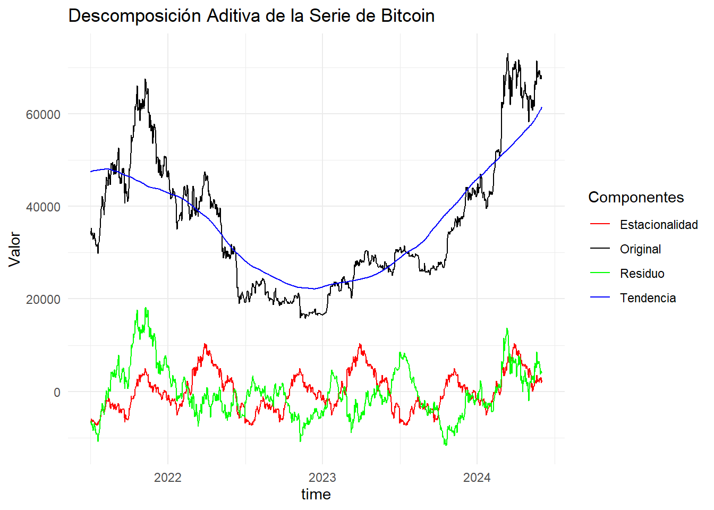
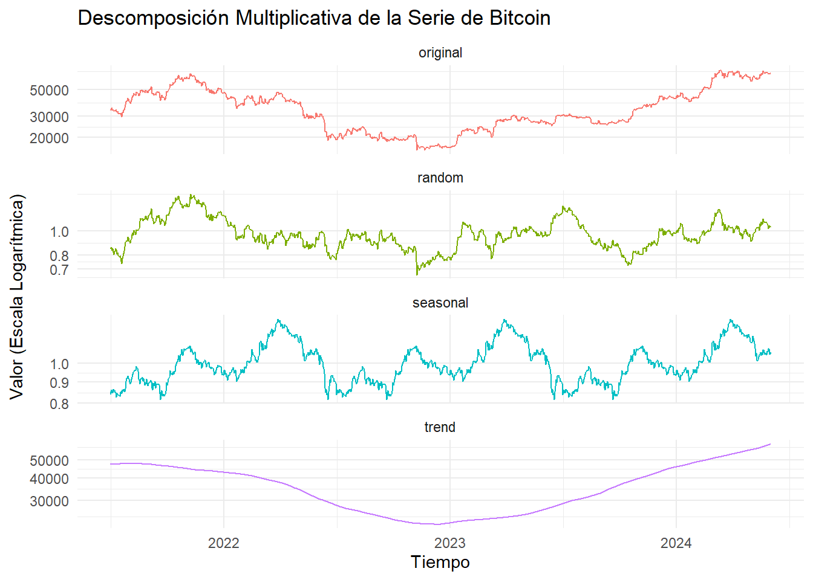
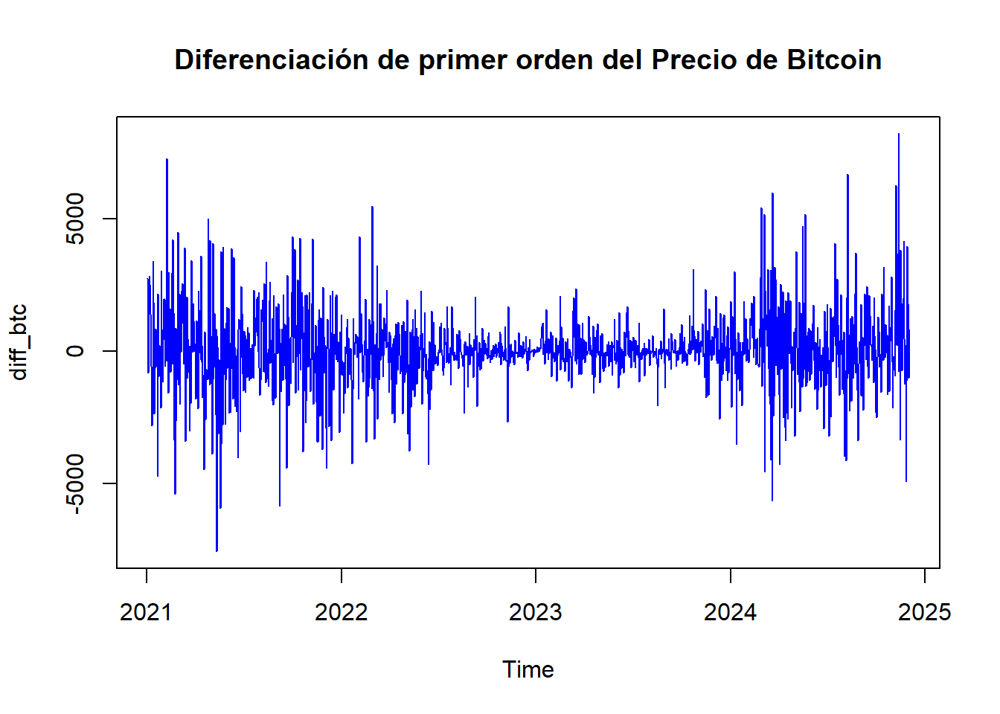
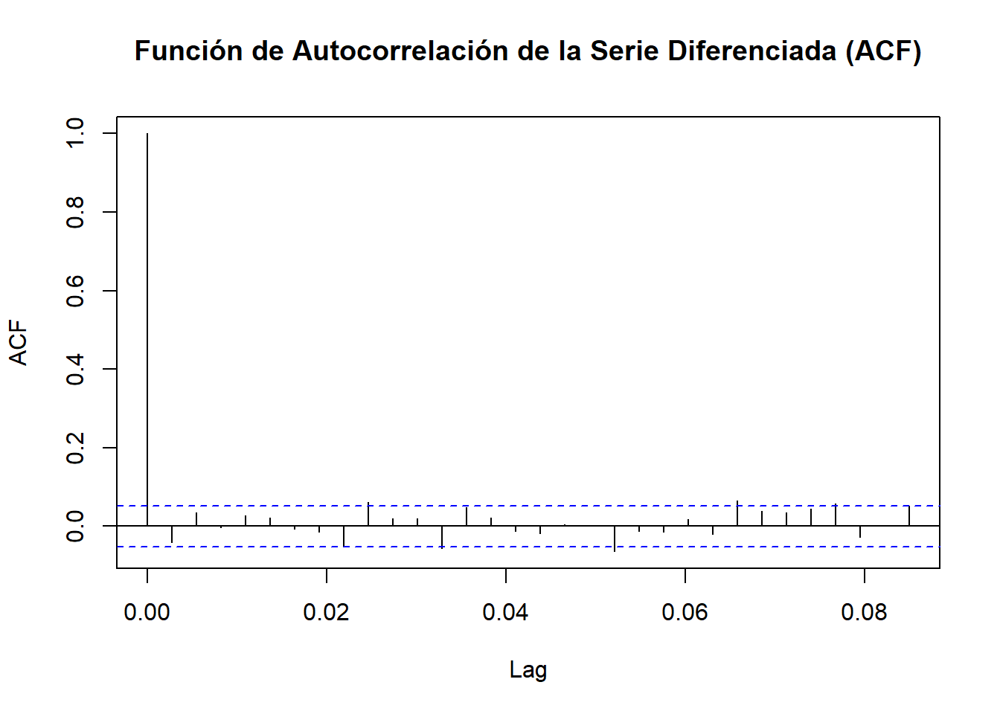
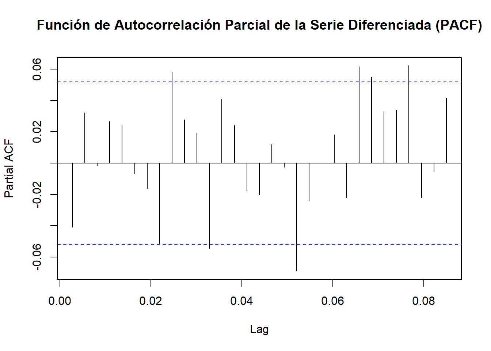
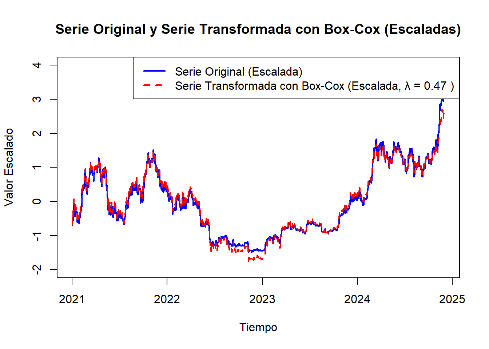

Capítulo 3 Preprocesamiento y Visualización
El preprocesamiento y la visualización de una serie de tiempo son pasos fundamentales en una serie tan volátil como la del precio de Bitcoin, donde variaciones abruptas pueden distorsionar el análisis. Por otro lado, facilita la comprensión inicial de los patrones de tendencia, estacionalidad y ciclos en los datos, permitiendo detectar anomalías y proporcionar un contexto visual que guía decisiones analíticas. Así, estos procesos mejoran la capacidad de interpretar y predecir el comportamiento del Bitcoin en el tiempo.
Descomposición Clásica: Es un método tradicional para descomponer una serie en sus componentes principales: tendencia, estacionalidad y ruido o residual. Esta técnica se basa en la premisa de que una serie temporal se puede desglosar en patrones observables que, cuando se suman o multiplican, generan el comportamiento de la serie completa. De aquí surgen dos modelos de descomposición:
-Modelo Aditivo: Cuando los componentes se combinan de forma aditiva, siendo adecuado cuando la variación estacional es constante a lo largo del tiempo y no depende del nivel de la serie.
-Modelo Multiplicativo: Cuando los componentes se combinan de forma multiplicativa, siendo adecuado cuando la estacionalidad y la tendencia varían en función del nivel de la serie, es decir, cuando los efectos estacionales son más fuertes en niveles altos de la serie.
3.1 Descomposición
# Descomposición aditiva
decomp_add <- decompose(btc_ts, type = "additive")
# Convertir componentes en un data.frame y eliminar valores NA
decomp_add_df <- data.frame(
time = as.numeric(time(btc_ts)),
original = as.numeric(btc_ts),
trend = as.numeric(decomp_add$trend),
seasonal = as.numeric(decomp_add$seasonal),
random = as.numeric(decomp_add$random)
)
# Eliminar filas con NA
decomp_add_df <- na.omit(decomp_add_df)
# Visualización de componentes aditivos
ggplot(decomp_add_df, aes(x = time)) +
geom_line(aes(y = original, color = "Original")) +
geom_line(aes(y = trend, color = "Tendencia")) +
geom_line(aes(y = seasonal, color = "Estacionalidad")) +
geom_line(aes(y = random, color = "Residuo")) +
labs(title = "Descomposición Aditiva de la Serie de Bitcoin",
y = "Valor",
color = "Componentes") +
scale_color_manual(values = c("Original" = "black",
"Tendencia" = "blue",
"Estacionalidad" = "red",
"Residuo" = "green")) +
theme_minimal()
La descomposición aditiva supone que la serie de tiempo es una suma de sus componentes: tendencia + estacionalidad + residuo.
A través de este método, se observa que:
Tendencia: Muestra una tendencia descendente desde mediados de 2021 hasta mediados de 2022, seguida de una recuperación gradual que continúa hasta 2024. Esta tendencia podría reflejar ciclos económicos o factores de mercado más amplios que afectan a Bitcoin. La tendencia sugiere que después de un periodo de declive, el mercado de Bitcoin comenzó a recuperar su valor en el último año, lo que podría indicar un periodo de recuperación o consolidación en el mercado.
Estacionalidad: Muestra patrones que se repiten en ciclos regulares. La estacionalidad en este contexto podría estar relacionada con ciertos eventos recurrentes en el mercado de criptomonedas, como aumentos en la actividad comercial durante momentos específicos. La estacionalidad observada muestra oscilaciones regulares alrededor de cero, lo cual sugiere que hay ciertos patrones cíclicos que afectan el precio, aunque estos efectos son relativamente pequeños comparados con la tendencia y la volatilidad general de Bitcoin.
Residuo: Muestra que, aunque podemos identificar patrones estacionales y una tendencia general, aún hay fluctuaciones impredecibles en el precio de Bitcoin que no son fáciles de modelar.
# Descomposición multiplicativa
decomp_mult <- decompose(btc_ts, type = "multiplicative")
# Convertir componentes en un data.frame y eliminar valores NA
decomp_mult_df <- data.frame(
time = as.numeric(time(btc_ts)),
original = as.numeric(btc_ts),
trend = as.numeric(decomp_mult$trend),
seasonal = as.numeric(decomp_mult$seasonal),
random = as.numeric(decomp_mult$random)
)
# Eliminar filas con NA
decomp_mult_df <- na.omit(decomp_mult_df)
# Convertir los datos a formato largo para usar facet_wrap
decomp_mult_long <- pivot_longer(decomp_mult_df, cols = c("original", "trend", "seasonal", "random"),
names_to = "component", values_to = "value")
# Graficar todos los componentes en un solo gráfico con facetas y escala logarítmica
ggplot(decomp_mult_long, aes(x = time, y = value, color = component)) +
geom_line(show.legend = FALSE) +
scale_y_log10() +
facet_wrap(~ component, scales = "free_y", ncol = 1) +
labs(title = "Descomposición Multiplicativa de la Serie de Bitcoin",
x = "Tiempo",
y = "Valor (Escala Logarítmica)") +
theme_minimal()
La descomposición multiplicativa supone que la serie de tiempo es el producto de sus componentes: tendencia x estacionalidad x residuo.
A través de este método, se observa que:
Tendencia: Muestra que esta es suave, es decir, no muestra un aumento progresivo en la variabilidad, lo que ayuda a identificar la dirección general sin verse afectada por fluctuaciones de corto plazo.
Estacionalidad: Muestra patrones cíclicos que se repiten en el tiempo, lo que indica que existen ciertas fluctuaciones en el precio de Bitcoin que son predecibles y que siguen un ciclo regular. El hecho de que este componente sea proporcional a la tendencia sugiere que los cambios estacionales son más fuertes cuando el precio es alto y más débiles cuando el precio es bajo.
Residuo: Muestra variaciones relativamente pequeñas alrededor de 1, lo cual sugiere que, en su mayoría, las oscilaciones de la serie pueden ser explicadas por la tendencia y la estacionalidad.
Una vez análizados los dos métodos de descomposición, dado el comportamiento cíclico y proporcional a la tendencia del precio de Bitcoin, la descomposición multiplicativa es la más adecuada.
3.2 Estacionariedad
El test de Dickey-Fuller, también conocido como prueba de raíz unitaria, determina si una serie temporal es estacionaria. La hipótesis nula del test asume que la serie tiene una raíz unitaria, es decir, que no es estacionaria. Si el valor p resultante es menor que el nivel de significancia 0.05, se rechaza la hipótesis nula, lo cual sugiere que la serie es estacionaria.
# Realiza el test de Dickey-Fuller sobre la serie de tiempo
resultado <- adf.test(btc_ts)
# Muestra el resultado
print(resultado)##
## Augmented Dickey-Fuller Test
##
## data: btc_ts
## Dickey-Fuller = -0.56974, Lag order = 11, p-value = 0.9787
## alternative hypothesis: stationaryEn este caso se observa que el test Dickey-Fuller indica que la serie no es estacionaria, puesto que el valor p resultó mayor al nivel de significancia (0.05).
En vista de lo anterior, se debe apliar diferenciación a la serie, para alcanzar la estacionariedad
Se verifica el número de veces que se debe aplicar diferenciación para obtener estacionariedad.
## El número de veces a diferenciar es 13.3 Diferenciación
Consiste en la transformación de la serie, restando su valor actual con el valor anterior, con el objetivo de eliminar tendencias o patrones de crecimiento a lo largo del tiempo, de manera que se convierta en una serie estacionaria.
# Diferenciación de primer orden
diff_btc <- diff(btc_ts, lag=1)
# Graficar con título y color
plot(diff_btc, main = "Diferenciación de primer orden del Precio de Bitcoin", ylab = "diff_btc", xlab = "Time", col = "blue")
Del gráfico se puede observar que, la serie diferenciada muestra una gran volatilidad al inicio, con diferencias que oscilan significativamente en ambos sentidos, indicando que los precios de Bitcoin estaban experimentando cambios bruscos, tanto al alza como a la baja. Posteriormente, la volatilidad disminuye, por lo que el precio atravesó por un periodo de estabilización, sin embargo, al final de la serie, se vuelve a presentar un incremento en la volatilidad.
Por otra parte, la serie diferenciada parece oscilar alrededor de cero, esto es consecuencia de la eliminación de la tendencia.
Finalmente, se realiza de nuevo el test de Dickey-Fuller.
# Realiza el test de Dickey-Fuller sobre la serie de tiempo diferenciada
resultado_diff <- adf.test(diff_btc)## Warning in adf.test(diff_btc): p-value smaller than printed p-value##
## Augmented Dickey-Fuller Test
##
## data: diff_btc
## Dickey-Fuller = -10.883, Lag order = 11, p-value = 0.01
## alternative hypothesis: stationaryEn este caso, dado que el valor p es muy bajo (0.01), hay suficiente evidencia estadística para rechazar la hipótesis nula y aceptar la alternativa, es decir, que la serie diferenciada es estacionaria, por lo que la tendencia ha sido eliminada.
Funciones ACF y PACF
Las funciones de autocorrelación (ACF) y autocorrelación parcial (PACF) son herramientas para el análisis de series temporales, que permiten identificar patrones y a determinar los parámetros de los modelos ARIMA. En este caso, Para ajustar el modelo ARIMA, resulta fundamental determinar si se necesitan términos AR o MA para corregir cualquier autocorrelación que persista en la serie diferenciada.

La ACF muestra un pico significativo en el rezago 1, lo cual indica que hay autocorrelación en el primer rezago de la serie diferenciada. En los rezagos posteriores, los valores de la ACF están dentro del rango de no significancia (dentro de las líneas azules), lo que indica que la serie no tiene autocorrelación fuerte a partir del segundo rezago.
pacf_diff <- pacf(diff_btc, main = "Función de Autocorrelación Parcial de la Serie Diferenciada (PACF)")
La PACF muestra varios picos en diferentes rezagos, aunque la mayoría están dentro del límite de no significancia. Este patrón sugiere una serie que tiene un componente autoregresivo, es decir, de tipo AR.
Verificar Transformación de Box-Cox:
Si bien al realizar la descomposición multiplicativa, el componente de tendencia parece seguir un ciclo suave, sin cambios bruscos en la amplitud, lo que sería un indicio de que la tendencia no muestra un aumento en la variabilidad, resulta necesario corroborar la necesidad o no de realizar transformaciones a la serie.
Box-Cox se utiliza para encontar el mejor exponente para estabilizar la varianza. El valor de lambda será el que determine si resulta necesaria aplicar la transformación.
# Calcular el valor de lambda óptimo para la transformación de Box-Cox
lambda <- BoxCox.lambda(btc_ts)
print(lambda)## [1] 0.4679757# Aplicar la transformación de Box-Cox usando el valor de lambda
btc_ts_transformed <- BoxCox(btc_ts, lambda)
# Escalar ambas series para llevarlas a la misma escala
btc_ts_scaled <- scale(btc_ts)
btc_ts_transformed_scaled <- scale(btc_ts_transformed)
# Graficar ambas series en el mismo gráfico
plot(btc_ts_scaled, type = "l", col = "blue", lty = 1, lwd = 2,
main = "Serie Original y Serie Transformada con Box-Cox (Escaladas)",
ylab = "Valor Escalado", xlab = "Tiempo", ylim = c(-2, 4))
lines(btc_ts_transformed_scaled, col = "red", lty = 2, lwd = 2)
legend("topright", legend = c("Serie Original (Escalada)",
paste("Serie Transformada con Box-Cox (Escalada, λ =", round(lambda, 2), ")")),
col = c("blue", "red"), lty = c(1, 2), lwd = 2)
Un valor de lambda entre 0 y 1 indica que la varianza de la serie aumenta con el nivel de los datos, pero no de manera tan pronunciada como para necesitar una transformación logarítmica completa, que es cuando lambda = 0. El valor de lambda obtenido sugiere que la relación entre el nivel de los datos y su varianza es moderada
Por su parte, el gráfico muestra que la serie original escalada como la transformada están muy alineadas, en otras palabras, la transformación no altera significativamente la estructura de la serie. Esto sugiere que la serie original ya tiene una varianza estable y la transformación de Box-Cox no agrega un beneficio evidente en este caso.
En conclusión, inicialmente no es estrictamente necesario aplicar una transformación a la serie para controlar la tendencia, dado que la diferenciación elimina este efecto. Tampoco es necesario aplicar una transformación para controlar la variabilidad, dado que la serie original muestra una varianza estable.